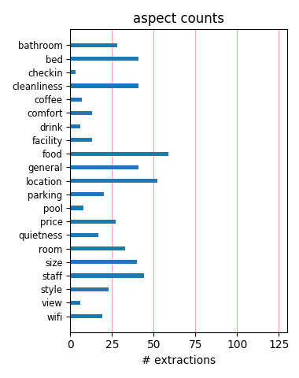
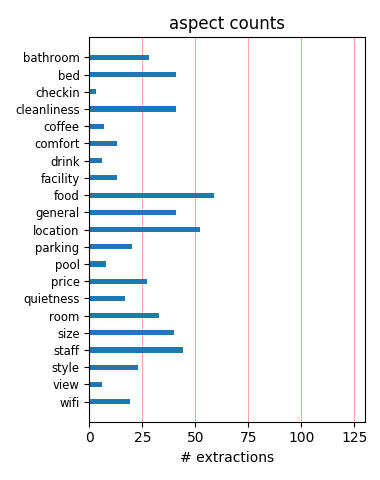

Don't expect a whole lot here. It is an average airport hotel. Confusing layout. Larger than normal rooms do make things more comfortable. The bathrooms are worn and need updating. The workout rooms are decent - especially the larger one in Building Five.
We live about two hours and a ferry ride from the airport and always stay here when we have an early morning flight. We get the stay and jet package so we park for a week for only $30.00. It is somewhat dated but comfortable enough and the shuttle is very reliable.
Stayed at this hotel beause the park n fly. Was an excellent choice, beautiful hotel and great beds made for a perfect start for vacation. Have stayed at cheaper hotels with park n fly and they are always scary! Pay the extra bucks for a top of line hotel with free cookies.
My husband and I stayed here for one night before a cruise. This is a huge hotel. Clean rooms, comfortable bed. If you use their free airport shuttle service, make sure you get on the right shuttle from the airport because there is another Double Tree with a separate shuttle.
This place is huge - felt like I was in Disneyworld!! This is an older hotel that has gone through a recent renovation. Overall I was quite pleased as we paid only $50 through Priceline. Unfortunately there was no wifi and the parking was $16 per night - expensive for the area.
Despite the enormity of this hotel, it very much feels almost family run. The staff are exceptional and the quality without question. The hotel couldn't be better placed for flying out of Seattle. I won't hesitate to book here should my future travels involve a long leg from Seattle.
We opted for the $5 requested upgrade for hhonours members, and the room was superb when we got it. At $65 plus the upgrade this was outstanding value, so much so we used it on our return journey too. Lovely spacious Doubletree, with gift shop and a very good restaurant inside it. Choice of food was excelent.
This hotel embraces its role as an airport hotel and fufils its purpose very well. Staff are friendly and helpful, the rooms are decent, and it's very close to the airport. The airport shuttle runs round the clock (every twenty minutes) and is very efficient. The hotel's extended parking option provides great value.
We flew into Seattle and arrived after midnight. After driving up and down International Bl. one time we decided on checking in at the Doubletree. All the other lodging options seemed to have dimly lit parking lots next to seedy businesses or something. It's an ok hotel by any other standards but nice compared to what's close by.
We have stayed at this hotel several times in the family suite ( 2 bedrooms/1 king and 2 queen beds). Love the warm chocolate chips cookies and the service has always been outstanding. Excellent morning breakfasts and the airport shuttle runs every 15 minutes but we have made the 10 minute walk numerous times to the airport terminal.
I've stayed here a couple of times. The chocolate chip cookies are always a treat. The rooms are clean and nicely appointed. I used the computer in the lobby to print my boarding pass. The shuttle is convenient and reliable. It is on a busy street and I didn't see a restaurant within walking distance so I ate in the lobby. It was fine.
this hotel was so comfortable. After commuting back and fort from florida if too tired to drive back to my destination i always stay at this dbl tree. I have never once had a bad nights sleep in these beds. I love the big warm cookies in the evening. They never seem to slap my hand if I grab 2 or 3...recommendation goes to this hotel over others!
We have stayed at the DoubleTree Seatac more than 15 times, love it. I suggest getting a room in the tower. Upgrade to King Corner Room or Penthouse to really treat yourself, balcony are amazing in these rooms. Service is outstanding, there nightclub is always fun and classy. Don't have to worry about drinking and driving, just a elevator ride to your room!
We stayed here for a couple of nights at the start of our US vacation. We had a large room very clean and well furnished. Breakfast was good and the staff were very helpful. Hotel shuttle picked us up at the airport and took us to the light rail station to go into Seattle the next day. It wasn't noisy at all as you might expect being so close to the runways.
This hotel is a nice size and is convenient to the airport and restaurants. The fitness room is small but the bedrooms are standard. The staff was very helpful with all my business and pesonal needs. The hotel gave me 3 vouchers for $10 of any meal since I am a Hilton honors platinum members. That worked well for me since the food at the hotel is fairly pricey.
If you are staying near the airport, it is a great hotel. Easy to reach, very clean and well-appointed rooms. I was surprised at how nice the rooms were! The bed was amazingly comfortable. It is an easy drive into downtown Seattle from here and worked great for my late-arriving flight before meetings in Seattle the following morning. The coffee bar in the lobby was handy, too!
We spent one night here before flying out to Alaska. They have a good stay/fly program that we always use to leave our car there while on vacation. The room was clean and bed comfortable. My only complaint is that they charge for the use of wifi in your room. I can walk down to the lobby and get free wifi or use their computers for no charge. So why would I pay to use it in the room??
I stayed here for a week in June, and thoroughly enjoyed my stay. For an airport hotel, it was surprisingly quiet, rooms were extremely comfortable and well prepared, and the staff were all extremely helpful and courteous. The only drawback was that the restaurant was a little on the pricey side for breakfast, but there are many places nearby to eat. A great hotel that I would happily stay again in.
Well appointed, clean, convenient to airport and travels south of Seattle However, we were not informed by Priceline when we made resesrvations that hotel guests are charged $16/day +tax of $1.52 to park in the HUGE hotel parking lot. To add insult to injury, for people who use the parking lot to "park and fly", the charge is $7.95/day, almost half of what the hotel guests are charged!! What a rip-off!!
This room was one of the most comfortable rooms I've stayed at in a long time. Cushy bed, flat screen tv, great water pressure. Room was quiet and the shuttle to the airport runs 24 hours. I was there by myself and felt very safe. On the downside, I just recently tried to make a reservation for another night with my husband, and they want to charge $10 for the second person. (Yet they gave me two queens)
Expecting the Doubletree name to be better quality. The room was okay, but not as clean as one would expect. And then the real zinger was the unexpected additional parking charge! Our room was reserved well in advance, with no mention of a parking fee for their guests! Shame on you Doubletree for charging your own guests to pay to park on your site during their stay. I will not stay in a Doubletree again.
We stayed at the Double Tree for two nights in July. The suite was spacious, clean, and quiet. Our room had two sinks,a flat screen TV, and two comfortable beds. Very conveinient for early morning flights. The hotel shuttle will drop you off at your destination as long as it's enroute to the airport. Overall,it was a very pleasant stay at a very nice property. I am very delighted that we stayed there!!!!!!!!!
Stayed in the high-rise portion. Room was spacious and clean. Nice size bath. Ate at on-site bar/restaurant which was good. Staff asked family with small child to move to restaurant portion which was the right thing to do. Lobby has PC with printer to check in to airline and print boarding pass. Printer didn't work but able to check in for flight. Complimentary shuttle nice although couldn't fit everyone on a Sunday mid-AM!
The good: large room, food at the restaurants (especially the clam chowder), bed, view from the elevators, service, shuttle every 20 minutes to and from the airport (5 minutes away) The bad: the insulation for the windows is awful, so the hotel is extremely noisy at night (at least if you are facing the airport): airplanes, busy airport boulevard, rooftop with furnaces/chillers etc. No wireless in the rooms. Cheap toiletries, few towels.
We stayed here on a lay over home from Cancun. It was great to have a comfortable bed and room on our final night of holidays. The kids loved the pool which was warmer than the ones at the resort in Cancun which we could not believe as we were in Seattle! The staff was friendly and we appreciated the cookies after a long flight when we were waiting to check inn. Just a nice touch! Shuttle was convenient and would definitely stay here again.
After reading the reviews here, my family was VERY disappointed with the hotel. First, the hotel is going through major renovations in the tower part of the hotel. We stayed in the village part of the hotel, which were found to be old and dark. The room was like staying in a basement, an old and mildew smell. The A/C put out hot air. We put the A/C on 60 and the room immediately heated the room up 89 degrees. I could not recommend this hotel.
We decided to stay here for three nights during our trip to Seattle. The checkin clerk was very friendly and said she would ensure we had a good view. We ended up on the 11th floor overlooking the airport and the Cascades. We had a balcony, the beds were super comfortable, room was a good size and clean. There are restaurants all around, plus two in the hotel. Shuttle to airport runs every 20 minutes. Great place and would definately stay again.
We stayed at this hotel for one night before starting our Princess landtour. The hotel reception had a lovely smell of freshly baked cookies which were given out at check in and were delicious. The room was spacious and had a coffee maker. There were 2 double beds and the mattresses were really comfortable. We had a lovely buffet breakfast in the restaurant and sat by the outdoor pool in the morning while we waited for our transfer to the airport.
Overall this is a good property. Parts of the hotel are laid-out such that it can be difficult to find your room. My co-workers and I joke about the Doubletree Maze at SEATAC. It takes a few trips to figure it out. The hotel is very close to the airport and sometimes we walk. The van in the morning can be very crowded so get in line early. The coffee bar in the lobby is great and opens at 5. The rooms are comfortable and the cookies are great but getting smaller.
I was very pleased with my stay at this hotel. The room we stayed in was beautiful! Newer furniture, very comfortable bed with nice linens, two large sink areas and super clean. The front desk staff was friendly and helpful. We enjoyed the spa/pool area and they have a nice lounge with free internet access terminals. Free shuttle to the airport got us to the terminal in about 3 minutes! If you are looking for a place to stay near the airport - this is a great one!
I reserved this room through an affiliate travel booking platform and got a great room rate. Aprox. 75.00 (not including taxes) for a full day stay. Late check in was effortless and was greeted with a warmed cookie. I think it is fair to mention it costs to use internet in your room but for business travlers I suppose that is an expected cost. Great friendly staff took the edge off our long day of intercontinental travel. I would choose this hotel again as our stop over.
Decided to stay one night by the airport and used priceline to get a room and ended up with the doubletree at a good rate! The hotel is pretty big but the location next to the airport is great. I asked for a room in the tower and the room was spacious with a nice king bed and a balcony that overlooked the airport. The views of the airplanes taking off was great! There are a few restaurants around the hotel area and you can also easily walk to the airport should you want to.
Great location within view or shuttle ride from the airport. Princess has the contract for cruise passengers so you'll meet a lot of people coming and going on trips in the lobby or restaurant. Breakfast was delicious in the coffee shop, hot scones with jam and coffee. Other restaurants were withing walking distance of the hotel. There's a concierge desk which I found to be very helpful with questions. Free internet usage in the lobby too! I reserved off Priceline and got a great rate.
I had a quick stay here last week for one night. The good news - the hotel is very close to the airport with a 24hr shuttle to the airport. My room and bathroom were both very clean and the service at the hotel was friendly, The check in process could be slow and it would be helpful if the airline crews were not given first priority to jump in front of everyone waiting. The not so good news - food at the hotel was OK. I believe there are better options in walking distance from the hotel.
Hotel is very close the the airport and room was comfortable. Had a huge mirror in the bathroom that was well light around the edges. Wolfgang Puck coffee was available for the in room coffee maker, My room was in the tower on the 8th floor and had a balcony. Parking was expensive but if you don't mind walking across the street there is a parking garage (Wally Park) that if you park on the roof it's $12.95 + tax. If you have a AAA membership they will give you 25% off. That's where I parked.
I stayed in this hotel for 1 day, as a side trip from Vancouver. Yes it is a bit far from downtown, but very close to the airport. The hotel interior itself is a bit outdated, but the room we stayed in (in the tower) was very pleasant, relaxing and modern. I absolutely loved the warm cookies we were given at check in and the beds in our room were so incredibly soft. I actually miss the beds! The hotel staff was friendly and accomodating. I will definitely stay here again when I visit Seattle.
This was a great hotel. Close to the airport. They provided a shuttle if you do not have a car. The rooms were very clean and the staff was very nice. The swimming pool looked nice but we didn't get the chance to swim. We had dinner in the bar area. It was good and the staff was attentive. Check in and check out was easy and fast. It was a long ackward walk to our room. You go up stairs, down the elevator and thorugh doors. Odd but we made it. Surprisingly since this was close to the airport, we weren't woken up by any airplanes.
We stayed at this hotel one night before an Alaska cruise. We arrived very late, were greeted at the desk by a friendly employee who handed us a warm chocolate chip cookie to munch on while we were waiting for our room key. The breakfast in the restaurant was amazing, and the staff was very attentive and friendly. The room was very clean and comfortable. The gift shop was well stocked and very reasonably priced. We would highly recommend this hotel for before and after cruising because it is minutes from the airport and is lovely.
We left our car for 5 days and stayed in this Doubletree Hotel on our return,our shuttle arrived promptly and we were given a Tower Room . It was a huge room with great bedding,sheet count & pillows. We were pretty late 9.54pm but managed to get a decent meal in the bar, I will happily come back to this doubletrees. Only one hiccup when we were collecting our car through their valet ,the valet asked pretty abruptly as we $5 tipped him if we had settled our parking fee. Unfortunately I hope front desk could have better communication.
This is a good place to stay for a conference or if you need to stay for a night or two near the airport. The room was large and clean. I heard no noise from the airport, or elsewhere. The bed was VERY comfortable (a Serta mattress). This is a large property with (I believe) five buildings. Out the back of mine (#5) the deck looked out into a forest. The walk from that building to the lobby is about 2-3 minutes. Plenty of eating places nearby, and the bar in the hotel is fine also. You are charged for parking - $8/night for outdoor parking.
We just returned from a stay at the Doubletree Seattle Airport on both sides of our trip to Mexico and where nothing but pleased. We purchased the Park and Fly Package and were very happy to discover that this package included valet parking for our car directly out front of the hotel, not off in a back parking lot or at an off site location like many other hotels. The rooms were very spacious, modern and clean. The shuttle was an extremely convenient as well. I would highly recommend the Doubletree and plan on staying here again on our next trip.
Spent 3 nights at conference at the hotel. The staff are wonderful! They are dedicated and helpful to your every need. Bed's in the room were the heavenly beds and I slept very well all 3 nights. Room was highly run down. Wall paper peeling off walls in different places, light bulb not replaced in room and carpet stained. Bathroom floors seems dirty and needed to be regrouted. Food was very expensive in restaurant and just okay. Burger, soda and tip $21.00. Save yourslf some money and eat off site. This is a hotel in the Hilton chain and I was disappointed.....:(
We stayed at this hotel as it was close to the airport for our early morning flight. Although there was a queue at check in the staff offered us warm cookies and appologised for the delay. We were given a free room upgrade (we are Hilton Honors members). The room was a bit basic and dated but it was inexpensive and we could leave our car in their car park while we were on holiday. Shuttle to the airport every 20 mins 24 hours. The restaurant also had good food (we were given a $10 per person coupon to use in the restaurant from the hotel). Friendy waiter/waitress staff.
This hotel is the BEST at SeaTac! Valet parking was very quick and hassle free. Check In went very smooth, and we were upgraded to a very large suite at that time! The pool is very relaxing and big. Lounge is great! The rooms are very spacious and very nice. Beds are SO comfortable and the best sleep I have gotten at a hotel. Shuttle service is very quick and so great! They leave every 20 minutes on the hour. I have stayed at many hotels at the airport, and this one beats them all!!! Especially with the shuttle service. You can guarantee that we will be back soon, no doubt about it.
I arrived late at night and was flustered by the confusing and poorly lit parking options. I was staying at the hotel for under 8 hours and yet the clerk who checked me in was still encouraging me to pay for the valet parking. At my prompting he suggested the self-park behind the hotel but it was almost as expensive as the valet! The hotel room was fine, but I am not sure that this was worth it. I am a loyal Hilton customer and am glad to get the points but this hotel seems better-suited to guests staying for several days, not for someone who just wants a place to crash before an early flight.
As prior reviewers state, great place to stay the night before a flight. Stayed with my teenage son. Wonderfully quiet, considering the airport is literally across the street. Rooms large and comfortable. But still charging for the internet!! (and no in room wireless). It may be a profit center, but when Best Western gives free internet, it is time to change the policy. Also, charge for parking for overnight quests leaves a sour taste. I understand charging when leaving the car consecutive days when not using the hotel, but there shouldn't be a charge at a suburban hotel for guests for one night.
This is a pretty rundown hotel. We did not choose it. Our travel agent booked the hotel through a cruise company as part of a package deal. It was about fifteen minutes away from town and very close to the airport. We knew we would have to pay for parking overnight but were unaware of a parking tax on top of the regular fee. The service at the hotel coffee shop was really slow and the waiter seemed really bothered by having to come to our table to see what we wanted. The soup was brought to us pretty cold, but he seemed to vanish so we couldn't complain. Even Denny's would probably have been better.
We've stayed in this hotel three times in the past 2 years and overall we've been very satisfied. The stay, park & fly packages are *usually* a good deal, and their airport shuttle service is fantastic - I believe it runs every 20 mins around the clock. Great for those early morning flights, and no worries about traffic jams as Seatac Airport is right across the street. Front desk service can be a bit hit or miss, but the location, shuttle service, and stress-free park & fly service wins out. The rooms are relatively spacious, our kids love the pool, and the breakfast buffet isn't a bad deal for what you get.
I booked a post-cruise package and the staff did not know how that worked. Hassle to get from ship to hotel, hassle to get correct rate, hassle with hotel safe (should have one in room anyway), and a hassle to get to the airport the next morning. They offer shuttle service (sporadically) and even though I was outside in plenty of time, at least 40 people showed up to try and get into a VAN. I took a taxi as everyone was trying to cram into the shuttle with no respect for first-come-first-served. Room service was good, however. Room was an "upgrade" but so far from the elevator. Would avoid this hotel in the future.
Across from Sea Tac Airport. Very big, spread out hotel with very reasonable rates and nice rooms, although some are a bit of a convoluted walk from reception. Lots of air crews use this hotel which has a frequent free shuttle to airport. We stay here and go to Seattle for Mariners games. The shuttle will drop you at the airport train station if you are going to Seattle, but on your way back you must walk from the station to the shuttle bus pick up area at the airport(about a 5 to 10 minute walk). Parking and some extras relatively expensive. We have stayed here a few times and keep coming back because it is good value for money.
Physically, this is a very tired property. While renovations appear to be underway according to signs, the hotel infrastructure shows its age. Even where renovated, the hotel still needs work. My room, in the renovated tower, had very insufficient lighting and a bathroom that had seen better days. Provided amenities (e.g., soap, shampoo) were low quality. The tower elevators, which run on the exterior of the building, were quite cold. Staff wise, this hotel also needs renovation. Service in the more upscale of the two restaurants was almost unbearably slow and the food was cold when it finally arrived after over a hour at our table.
This is the best airport hotel we have stayed in, and we have stayed there twice. It has a convenient location and a shuttle service that runs every 15 minutes for 24 hours. We had a large room with a balcony, comfortable beds, an easy chair and ottoman, and a coffee maker - all things we don't always find. We ate supper in their restaurant and I had an excellent salad (large enough to divide) and an exceptionally good Reuben sandwich. There are also other choices, with several restaurants and fast food places within a very short walk. The staff was friendly and helpful and we enjoyed the warm, chocolate chip cookie we were given at check-in.
Our family stayed at the Doubletree for one night before flying out to Miami for a Caribbean cruise. We parked our car there for a week, and were impressed with the service and rates compared with the airport. The rooms are a good size, which is a bonus for me as I was traveling with my husband and two large teenaged sons in one room. We spent a good portion of our early evening at the pool, which has an awesome setting. We had dinner in the attached restaurant, and the food was absolutely delicious. After a good nights sleep, the free shuttle to the airport saved us a lot of stress! We would definitely stay here again when flying out of Seattle!
Arrived late, they had given our room away. Diamond members get a small gift...it was three pieces of fruit on a stick and two pieces of cheese...can you say cheesy!! Cookies were good, as always. Went to breakfast and got some french toast. Then there was this set-up for the syrup which was under a sterno can and full flame, the syrup was boiling. It was so liquified that it spilled all over my hand and burned me terribly. If it wasn't for Pam the waitress quick actions and bringing me ice, I am sure it would have blistered terribly. I am grateful she was quick. Keep your children away from these set ups, they are going to injure someone terribly!
Received a great deal on this hotel by bidding on Priceline. I didn't have a car so Airport, Light Rail and many restaurants are in walking distance. They do have an airport shuttle. The staff were very accomodating and I loved the chocolate chip cookie at check in. My room was clean and nice but seemed motel like away from the tower. Maybe I got the cheap seats being a priceline customer. Anyway, I requested a non-smoking room but the floor smelled like the stench of smoke. At least my room didn't reak otherwise I would of tried to change rooms. I just wish the smokers had their own wing. Other than that issue, the hotel is nice and staff was great.
When you need a hotel near the Sea Tac Airport, stay at the Doubletree and ride their shuttle. The Drivers are very professional, courteous and make you feel like you are their only customer! If something might goes awry, the staff are quick to correct and aim to provide a memorable stay that makes you want to return. The quality of customer service should be an inservice for a number of their competitors. We have stayed at Hotels that are many times more expensive yet the staff are nowhere near as impressive as the Doubletree. The Wynn in Las Vegas should sign up for tutoring to learn how to treat customers. Perhaps then their vacancy rate would dwindle!
We stayed 3 days at the Doubletree Hotel in July 2006. The front desk staff were grouchy, uninterested and not pleasant to deal with. We experienced this poor attitude with a few other staff members within the hotel. We were quite surprised as this was the only hotel during our two week Washington State vacation that did not provide a fantastic experience. Too bad considering the hotel facilities are lovely and the rooms are comfortable and spacious. I would not stay at a Doubletree Hotel again. It must be an unhappy place to work because it sure comes through to the customer. Spend your money at a hotel that does not see guests as interruptions in their day.
I sateyed here with husband and 1 year old son. One night we arrieved to find out patio door left wide open. We were on the first floor. There were also 2 cigarette butts on the small patio. Nothing was missing from our room but we were gone for over 10 hours that day and I do not know how long the door was open. The manager comped our parking ($17/day) but he was supposed to let us know who the last person to open our room door was and they never told us. This hotel is by a small lake and at dusk there are misquitos and misc. other bugs every where. I would not recommend this hotel. The only good thing about it was that i booked it on Priceline and got a really good price.
We flew into SEA TAC for a few days before our cruise and our travel agent recommended this hotel. The hotel was clean, beds were fine, hotel is located across the street from the air port, was within walking distance to a Denny's, Jack in the Box, and a steak place. Room was ready very early in the morning for us. The kids liked the pool and I was able to do laundry before the cruise. It had easy access to the light rail located at the airport (we took the DT shuttle over), and was next to an Enterprise car rental. Lots of conveniences close by. Downtown Seattle was about a 30 minute ride by light rail service (cost of $16 for the 4 of us) or $40 cab ride to the pier. Hope this helps.
Very nice hotel, very close to the airport, walkable in fact to the terminals in less than 10 minutes or one can take a free shuttle bus. Check-in was friendly and quick, and one receives a nice warm chocolate chip cookie along with the room key. Large spacious lobby, clean comfortable rooms. Flat screen TV with many stations available. Internet available in the room for a fee or free wifi in lobby. There are also complimentary computers to use also. There is a stand alone kiosk which one may use to check in for flights. All major airlines are represented. Can not speak to the dining aspect of the hotel as I did not eat there. All in all, a nice place to stay before or after the flight.
This hotel disappointed. As a Doubletree, I expected a GOOD three star property for my stay on August 27, 2004. What I found was rather run down and shabby. We were told we had a great view of the "lake" from our room. There was no lake visible. The bathroom was dirty and stained. Carpet was old as were the other furnishings. Coffee shop service was horrible. Waited forever to be seated and there were only 3 others in the place. Waitress never brought the items we requested and the order was askew. We had to go searching for our check to pay it. This Doubletree is very tired, and more like a 2 star property than a 3 star. It looks nice on the outside,, but inside it is very shabby and used.
My friend and I are both Hilton Honors members. We are currently staying here and prepaid for the room. What they didn't tell us when booking on the website is that the parking is $16 per night and the internet in the rooms is not wireless. On the incoming leg earlier, we stayed across the street at the Hampton for about the same price, wireless internet, free parking and free breakfast. Just doesn't make sense. Overall, the room is nice, but could have a refrigerator in it for the price. One thing I have learned about traveling is that to bring your own router just in case there isn't wireless. Especially when more than one person in the room has a computer. If I come back to Seattle, I'd go back to Hampton.
We stayed one night here before our flight home and I wish we had stayed here longer! What a great place. Warm cookies when you arrive. The parking situation was a bit weird - we had a rental we needed to return and we were given 20 free minutes to unload and get the car out, but the rental return was next door, whcih was nice. The rooms were gorgeous and spacious and comfortable. For $5 we got an upgrade to a family suite - which has 2 connecting rooms, 2 sinks AND a full bath. You cannot beat this for families. The pool was huge and gorgeous. This was cheaper than the hotel we stayed at downtown and I think in the future I would look for places like this outside the city and get a rental car to drive into the city.
We really liked the Doubletree Sea-Tac. We stayed here the last night of our trip to Seattle (got it on Priceline for $46 - not bad!). The bed was very nice, room was clean, we even had a balcony. It wasn't loud at all from the airport but was loud from the hallway (which didn't bother us since we left by 5 am). They were extremely convenient to the airport. The staff people were really helpful and nice. Plus you get a free cookie at check-in! :) The only complaint is - parking for overnight cost $16, and on top of that, we had $1.40 of tax!!! I can see paying parking for a downtown hotel - but for a hotel at Sea-Tac it seemed absurd to have to pay parking. Overall it was still a reasonable deal though. I would stay again.
Stayed for one night before catching a flight out of Sea-tac Airport. Booked thru hotwire and got such a great price ($69) we were worried what we'd be getting.... We were very pleasantly suprised!! We were greeted by very nice front desk staff and were given the Doubletree warm welcome cookies...what a nice touch! The room was very clean, cozy and very quiet even though it was so close to the airport. The hotel it's self was huge, but yet it still felt very comfortable. It has that "west-coast" feel to it with lots of wood and glimpses of green forrest outside. The beds were amazing. The restaurant was quite good considering it's not "downtown". The food was decent as was the wine selection. We will definately stay here again.
This hotel was within a stone's throw of Sea-Tac airport and right next to the off-site Thrifty car rental lot, so for location, it was great. Unfortunately, there was nothing memorable about the hotel itself; it was a huge place, reminiscent of a rambling casino hotel (but without the lights or the casino), but just bland. The hotel restaurant was nice enough, but again, bland; the food was nicely presented but had no taste. The first night there I did not hear any airport noise, but the second night, I clearly heard the planes. I also used the business center, but the computers were slow and ran an old version of software; one printer worked but the other didn't. To sum up: Just nothing special, I'd rate this hotel as an average place.
We have stayed at several Seatac airport hotels, all acceptable. This trip we needed a quick access to the airport with wheelchair accessibility and this was it. After this stay we will only stay here in the future when at Seatac. They not only are wheelchair accessible, but have an ADA van and very courteous staff that doesn't act put-out at having to help disabled guests. The hotel itself is very nice, we were given a very recently updated room in the tower. The restaurant and bar restaurant are better than average and again great staff. My husband was quite happy with the clam chowder he ordered at the bar after a late night arrival, and that's saying something! The beds were very comfortable, room large enough for wheelchair, and bathroom clean. All good!
The DoubleTree was convenient to the airport, even though we were part of group travel, the DoubleTree had an airport shuttle. This is a multi story well thought out hotel. There were elevators, gift shop, restaurant and lots of other dining choices just across the street. You could safely cross the street at the light and crosswalk and find your self at a diner or several other restaurants. The hotel staff was courteous and very helpful with our questions. Our room was large and very comfortable. Even though we were there for just one night we would recommend this hotel for multiple night say if you are visiting the Seattle, WA area. We cannot comment on the value, as our price was included in our group travel, so Iwe're sure it was a group or discounted rate.
Pros - Very close to airport, very quiet rooms (you cant hear the airplanes taking off even though it is right across from the airport), friendly staff, VERY comfortable beds with lots of pillows, large rooms, ice and vending machines close to all rooms, nicely appointed bathrooms, free shuttle (runs every 20 min, no reservation needed), convenience store on site, ATM, warm cookies on check in. Cons - Hotel is spread out so pay attention to how to get to your room as you may get lost, Feather pillows (synthetic available on request), Pay parking ($16 self/day $20 valet/day), warm cookies on check in. We have stayed at this hotel several times, and others in the area. It may cost a little more to stay here, but we feel it is worth it for the quiet rooms and the very comfortable beds.
I'm surprised at the negative reviews, I'm a regular Priceline customer, staying at the Doubletree usually once a month and have never had a bad experience. Granted it's a large hotel and I don't like hiking to a room in another zip code. I always ask for a room near the lobby and am always accomodated. The rooms in the wings are larger than those in the tower and if you get wings 2 or 3 closer than walking to the tower wing plus no elevator hassle. The rooms are always clean, the beds great, bedding and bath linens top notch. They recently have gone to flat sceen televisions throughout the place which was overdue but is greatly appreciated. I've always found staff friendly and every request granted. Airport pickup runs every 15 minutes. The cookies are a nice touch too. I'm always pleased when my Priceline bid results in the Doubletree
Very close to Seatac, we were tempted to walk there from the airport. In fact, the free shuttle probably spends more time driving back to the hotel than it would probably take to just walk back across the street. The hotel is clearly old but Hilton has gone to some lengths to make it feel more up-to-date. It's obviously clean, although the further you get into the maze of halls the more the funky smell of "old" permeates the air. We utilized the free airport shuttle, which is handy, but did not use any other hotel service. The room was fairly quiet when other guests weren't talking in the hall. The bed was quite comfortable and free of bed bugs. The neighborhood has mostly fast-food or 'greasy-spoon' joints except for a nice looking Thai restaurant across the street. We would certainly use this hotel again as our layover sleeping arrangement on our way to and from vacations.
I stayed one night at this hotel, as we were flying out early the next morning. The hotel is conveniently located, just across the street from the airport entrance with a free shuttle that runs every 20 minutes. I was disappointed to learn there was a fee for parking ($16+tax), a fee for Internet ($5 for one hour), no simple breakfast included. When we tried to leave, our paid parking pass wouldn't register to let us out of the parking lot, and there were no attendants handy, so we were late returning our rental car :( -- I'm thankful we didn't get dinged on that. The hotel was nice; good clean rooms. Our room was connected to the main lobby by a skyway; we were in building 5 -- it wasn't very close. On the plus side, we got warm cookies upon check-in. The diner next door was good -- I think it's 'Dave's Diner'. Overall, it was a nice hotel, if you are prepared to pay for it.
This property is a mess. It is laid out in wings that make carrying your bags a nightmare, up elevators and down again. When you finally reach your room the heaters all make tremendous noise, rattle, rumble. I changed rooms six times before deciding that all the wings were the same with traffic noise, heater noise, and all the hiking and dragging bags from room to room. I asked for a room in their Tower, but was told that Priceline customers had to pay a ten dollar a night premium, which I GLADLY paid. But the nightmare wasn't over, then it took three more tries to get a room with a non-rattling heater and sliding doors that sealed and did not let the traffic noise in. It's NO three star hotel at all. Priceline should be ASHAMED of rating it up with the Hilton SEATAC, where I was placed on the first night. The Hilton is a great hotel, but the Doubletree is purely a nightmare.
OUR overall stay was great, would have been nice to have no feathered pillows , not having a MICROWAVE,REFRIDG not cool, they charge each day for a roll away bed they said they would accomumdate for up to five in one room stayed three days so used blankets on the floor for the two boys I requested four blanket but had to go down to argue after only getting one they charge for wi-fi in room, LOBBY FREE- charge for daily parking no continuial breakfast without charging all these should change I called on phone for the entertainment book checking in nope they dont take it close to many places to eat,bank and even small cascino the airport close yes somewhat noisy but hey what one is not only during day time night time very quiet staff quiet friendly HOUSEKEEPING WONDERFUL yes i would recommend this hotel to others it'sa nice place is great for summer as with pool only on outsde .
We stayed here for 1 night in August since we had an early flight the next morning. Check in was easy and the cookies were nice. Having the printer in the lobby to print your boarding pass was really convenient. The elevators for the tower are not close. We wanted to carry our own luggage and got tired of the bell hops asking if they could take it for us. They were not too thrilled when we wanted to borrow their cart. t was a very long walk to get to the room. The room itself was nice but not for $200.00 per night. The inner hall was quiet but there was a lot of traffic noise from the outside. The bed was comfortable but between the noise of the traffic ( not the jets) and the room fan, we did not sleep well. There was mildew in the bathroom-cleanliness was fair. The shuttle to the airport was very nice and had bottled water. We would not stay here again because of the noise and mildew.
We took a Park'n'Fly package which allows us to stay 1 night and park our vehicle for up to 7 days. This was right by the SeaTac Airport, whereby they had a shuttle that would come every 20 mins, and the valet would park the vehicle while we off traveling. The Front staff were friendly and efficient in getting us checked in and taken care of. Even got free cookies - wasn't expecting that. The building has unique architecture which can prove to be challenging for some to find their rooms. Use the map the front desk provide and you will have no issues. Our room was nice and clean and on the back side (away from street traffic), plus only heard planes when we has the sliding door opened. We didn't have a chance to use the pool, although enticing. We were able to grab a quick bite and coffee at the convenience Starbucks in the lobby on our way out to our flight. We would gladly stay here again!
Located within a few miles of Sea-Tac this is a very large hotel with a Starbucks, gift shop, meeting rooms, breakfast room, bar and dining room. The food was a little expensive-$13 for a burger and $12 for an omelette alone. However it was good enough. I had a spacious and clean suite with fridge, microwave, nice sized table and a comfortable bed. I loved that the heating system was quiet. I had plently of outlets, but my suite on the 12th floor had recently been remodeled. The walk out balcony was a nice surprise. It has a main tower, which is the best place to stay as you are close to everything, as well as several wings. From the wings it was a bit of a hike to the restaurants and front desk. Nice pool and fitness areas. Parking is expensive at $25 for valet and $21.50 for self-park per night. Free shuttle to and from airport helps. Verify internet price-not free. Good jumping off spot for wherever you want to go.
Before departing to New York, we stopped overnight in Seattle and stayed at this hotel after scoring a great deal from Priceline. The hotel is huge and they give you warm cookies once you check-in. The design of the hotel is a little maze-like but still beautiful and the pool definitely makes you feel like you're somewhere else rather than beside the Sea-Tac Airport. Beds are comfy, showers are great - the floors are marble which made going to the bathroom a little painful on the feet (COLD FLOORS!). The only downside is that the lady at the front desk gave us the weirdest directions to get to our hotel room. We ended up going outside, and around and got lost when we found out later that we could have just gone around the corner from the check-in desk. We loved that they were playing the Canucks game in the restaurant/bar, too! The airport shuttle service was great, friendly and on-time. Staff is very courteous and friendly.
Bought our stay here on Priceline. Got a good deal $45 for the night. It is hard to find fault at that price, and I won't. But although the room was huge and lavish with two large queens, it was not a place I enjoyed. Our room was in the farthest section of the hotel, and tedious to get into to, and by the time we got settled it was too much trouble to go out to eat. No frig or microwaves in Doubletree hotels, too many pillows on the bed. The room had a large balcony overlooking a lake and on the 4th floor we were up in the trees. Despite the low rate, the receptionist tried to give us the type of room I wanted (high floor, one bed) and was very pleasant to me. A beautiful hotel for other types of travelers - groups, business people, etc. For those using the hotel to fly there are shuttles, flight info, and a kiosk to print out boarding passes (although it did not work for me). Just too too big for a one night stay, but a lovely hotel after all.
I've stayed at the Doubletree several times when I need to fly in and out of Seattle. It's a solid 3* hotel and good value. Pros: - cookies upon check-in - one of my favorite things about the Doubletrees - complimentary airport shuttle every 15 mins - nice pools, rooms are very comfortable with excellent beds and Neutrogena toiletries and Wolfgang Puck coffee - nice food selection in hotel Cons: - parking is expensive - $16/night. If you're just crashing for the night, the hotel has 1 night hotel plus x days parking that's not a bad deal - no breakfast - no free wireless in the room - it's a fee - don't remember what it was since I've never used it - HUGE complex - both a plus and a minus - if you get one of the far wing rooms, you have a long way to walk after check-in Overall, I think it's a great value, especially if you get a Priceline rate. The cons for me aren't a huge issue since I'm just overnighting it, but would be more significant for a prolonged stay.
We ended up at this hotel as our flight home was cancelled. We stayed near the airport at the beginning of our trip and stayed at the Cedarbrook Lodge as it was rated no 1 on Trip Advisor. This hotel is on a par in terms of service and room quality. Considering over a hundred people turned up at the same time due to the cancelled flight the check in was very quick. The staff went around the lines of people handing out the essentials of shaving foam, razors, toothpaste, toothbrushes and home made cookies as we didn't have our luggage which was checked into the cancelled flight. Room was enormous, with balcony and was spotlessly clean. Restaurant food was excellent and reasonably priced and breakfast was good. Shuttle service was very quick with plenty of buses on hand. The only issue we had was the size of the hotel with various wings that were difficult to navigate. A few more signs halfway down corridors would have helped. We got lost as did lots of people we met along the way! Don't let this put you off though.
Stayed here after New Year's day and following day since we had tix to Seahawks game 01/02/11. We LIKED the fact that it was close to new rapid transit terminal which we chose to take to stadium. This plus we luv their complimentary cookies that they offer upon check-in. Yes, the hotel is large and somewhat dated - but the cleanliness and service is very goo d. My only blip was with a faulty magnetic door reader that prevented us from gaining access to our room. I had to trek all the way to the front-desk from out tower location (to have key re-coded) only to f ind it did not resolve issue. Frustrated - we called front desk - who called security - who called maintenance. They discovered faulty battery problem and reset. All of this resulted in out take-out food getting cold plus I lost my scarf somewhere along the way. Also, wished to have their shuttle drop us off @ transit terminal but we were told to wait - we decided to walk and it was rather cold. Saw shuttle pass us along the way ;-( Still, LIKE the location and the cookies ;-)
We spent the night in this hotel our last evening in Seattle before an 8 a.m. flight. The area around the airport can be iffy, as in many large metropolitan areas. This hotel is clean, neat and offers good value for the money. We felt safe and secure with our small children. AND they have the famous Doubletree chocolate chip cookies! We were wiped out from a long day and wanted to stay in the room for the night and rest. We ordered clam chowder from the menu - much better than I expected - and finished off fruit from Pike Place Market. The hotel has seen its newer days: the carpets are threadbare in some spots and the cement balconies are noticeably empty of furniture. But the rooms are a great size, and we noticed large groups of flight attendants from various airlines staying there as well. The hotel employees were very polite and most efficient: we were on our way to our room within 30 seconds, warm cookies in hand. I went down to the lobby about 5:30 a.m. to print out our boarding passes, and a front desk employee came over to be sure everything was going well and I had what I needed - nice touch.
This is a large hotel and I expected it to be large and impersonal. On the contrary. It has "small hotel" service, meaning that you don't feel lost and they treat you well. Several fireplaces and seating areas in the lobby make it comfortable. I had a reservation for a "mountain view" room. Initially, I had a view of the airport. I asked for a different room and was given a much better view on the other side of the main section of the hotel. Very nice pool area although in cool, rainy Seattle I didn't get a chance to swim. The food was good although a bit pricey. The service in both the casual restaurant at breakfast and the dining room in the evening was efficient. Spacious room and very comfortable bedding. The room to which I was initially assigned had a broken lamp and a rip in the carpet. The second room was nicer. Looks like they are trying to keep up with on-going updating and maintenance. I stayed here four nights for a conference and was actually pleasantly surprised by the overall hotel experience. Lots of airline personnel stay here as well. And yes, we like the chocolate chip cookies at check-in.
I had booked this hotel due to my previous terrific experience with a very nice room and bath. Upon arrival, I requested the same room as previously, if available. I was informed that entire floor was currently being re-furbished and there were no rooms of that quality available. He hoped re-furbishing would be complete in January. Interesting, as the beautiful room I stayed in previously was very new-gorgeous bath and soaking tub. I can't imagine those rooms would need refurbishing! I was then given another "Hilton Honors" room. I arrived to a room on the very ground floor that had a glass door that opened to the outside parking area. Due to security, I did not think this was a good idea for a single female traveler, however, I did not want to 'make waves' and request another room as I was only there for one night. Upon further inspection of the room, the older bathroom wood doors were dirty from years of use-these "Hilton Honors" rooms really need refurbishing. I had such a great experience the first time, I am disappointed-and-as a single female traveler, will never stay on the ground floor of any hotel again, if at all possible.
Like many before us, we stayed here before heading out to somewhere else the next day. The check-in was a bit slow, but when our turn came, I could understood why because the desk staff was incredibly friendly and determined to answer all of our questions--she was a very nice person. In fact every staff member that we encountered here was friendly. We had a double queen room in the tower, looking out towards the mountains. The room was quiet, very comfy beds and we enjoyed the view from the 10th floor; the room and hallways could use an update, but are perfectly adequate. The tower rooms do have balconies but the space is shared with the room next door and divided by a set of austere looking bars--plus there is no furniture to sit on so the balconies are not really functional. I am told there are good Thai and BBQ restaurants within walking distance across the street. We tried the hotel restaurants and the food was quite good. Hotel pool is outside, heated to a nice temp and there is a hot tub nearby with a nice seating area all around. Self-parking is $19. Internet is free if you have HH Gold and works well. All in all a fine stay.
On a recent US trip we probably stayed in about 10 hotels and this one wouldn't rank in the top 20! This is a very large and confusingly laid out hotel. When we found our room we discovered that the bathroom hadn't been cleaned and there were dirty towels lying around. We advised reception who promised immediate action. When we returned about 10 hours later nothing had been done. We were offered a change of room and the assistance of a three man team to move. We began loading our luggage ourselves and when no-one arrived I headed to reception to be greeted by one man with our new room key. He made no offer to assist. No facilities were open early next morning when we were headed for our flight (surprising in such a location where there were lots of people headed for early flights) and although there seem to be a lot of valet staff around, none of them made any effort to assist. We had decided to go with this hotel to save a small amount of money and as a change from the Cedarbrook lodge we had stayed in a couple of weeks before. Big mistake. On the basis of this experience I will never choose a Doubletree hotel again. It is just not worth the money.
Stayed at this property for one night with my family ( wife and 4 and 7 yr old) before a morning flight. Used the park and fly package. Valet was quick and received help with bags. Check in was very quick and was assigned a two queen room in the tower. Room was typical for a double tree. Decent size with flat panel TV, and normal size bathroom. Had a room that faced away from the airport so that helped with the noise. Slept ok, but the room was quiet. Service was great and bell person got ice for us and was very helpful. Check out was quick. Shuttle bus goes every 18 minutes and we walked out the front door just as one was leaving. Was hoping it would stop but it kept going (empty at that). At that point we waited the 18 minutes with 10 other people and caught the next bus. Return to the hotel was fine. Bus driver called for our car but it wasn't ready when we arrived. waited a few more minutes for valet to bring car back. Be sure to have your receipt for parking from the front desk (i did thanks to previous posts) or you won't be able to get your car. All in all a good airport property. Just be advised, this is a big conference service type hotel and they have many groups that use it....might not always be a quiet hotel, but for our trip it worked out great.
After a miserable day at Sea-Tac, we thought the Doubletree would be heaven. Well, not quite. The hotel is divided into different wings. The crappy wings are old and the rooms smell musty. The decor and bathroom are straight from the 70's!! ( Liekthe Brady bunch!). Rooms are not particularly posh or large. Ours was kind of dingy, definitely in need of a remodeling. My wife and I stayed only 1 night before flying out of Sea-Tac the next morning. Hotel was fine for our purposes, but I wouldn't have wanted a longer stay there. Beds were very comfortble . Free internet access in the lobby only and open 24 hrs. . Pool and whirlpool were nice, but would prefer 24 hr. access like health club. Room service was typically expensive . We ate at both the lounge and the cafe and food was average at best, but the service VERY GOOD! (Eben the bus boy made sure we were served well) The front desk staff was also very good! The exterior of the buildings in these wings looks like some outdated Polynesian tiki architecture. The room room's AC was working fine and it was pretty quite. No airplane or traffic sounds. The free airport shuttle runs every 15 mins or so and really helped us catch our flight the next morning. So overall you get what you pay for. I got a good night sleep.
We needed a hotel near the airport for just one night, and selected the Doubletree. It was a great decision. Our plane landed at noon, and when I called about an early check-in there was no problem. In spite of the fact that a large convention was concluding and check-out time was not until noon, they had our room ready and waiting. The room was spacious with a comfortable bed and a large selection of various pillows. There was a good TV, and nice bathroom with thick towels and plenty of hot water. Every room seemed to have a balcony. Our balcony looked over the pool enhanced with mature Pacific Northwest landscape. We loved the decor of the hotel. It was very suitable to the geography, and we did not have that feeling that we were just in any big hotel in any big city. We were especially impressed with the staff at the hotel. Our check-in and check-out were accomplished efficiently by pleasant and personable people. You absolutely cannot beat a Doubletree chocolate chip cookie as a welcome treat. My only complaint about this hotel was the charge for parking. I thought it was a little expensive for a hotel not located in the center of the city to charge $15 per day to park a car. Nonetheless, we will certainly stay at this hotel when we return to Seattle again.
We arrived to the hotel July 23rd. late at night. I had called earlier in the day and was assured a roll-a-way was available for us. When we arrived we were told by the front desk the roll-a-way would be sent up immediately and would probably be there before we got up to the room. 90 minutes later we still did not have the bed. We had been told the bed would be sent at 12:00 midnight. At 1:00AM we were again told the bed would be sent right up. At 1:30 the manager on duty (Named Robert) introduced himself to my husband at the front desk. Robert immediately stepped in front of my husband and folded his arms and gave my husband many excuses why it was our fault we didn't have the bed yet. One excuse was that the hotel was full and they didn't have time to serve us as customers. I talked to the manager on the phone at 1:30AM and he was still full of excuses why we didn't have the bed. We were tired and against Trip Advisor's advice we went to the restaurant at the hotel for a late night snack. We ordered food and received ice cold food one hour later. The final straw was the morning we left. I noticed the statement was not under the door on the day we were leaving. When we did leave, there on the floor OUTSIDE our door was our statement with our name on it. Thank God our credit card number wasn't there.
We had the penthouse suite, 2 rooms with a kitchenette. The shuttle getting from the airport to the hotel was very croweded and hot (yes hot for Seattle) and smelled. We had planned to eat at the hotel restaurant but it was not open. So we had to order a pizza. Strange for such a large hotel not to have a restaurant or two. They told us to go across the street. They did have warm cookies at check-in. The room was done up in buttery soft yellows. The bathroom was huge. Larger then some hotel rooms I've stayed in. It had a sunken in tub, huge walk-in shower, robes & full line of Neutrogena beauty products. Two flat screen TV's-sitting room w/ leather sofa, tables and chairs. There was a huge wrap around balcony with a view of the glass elavators and a view of the Cascade Mts. The bed was so comfy I slept like a baby. The room was very sound prrof, as I did not hear anyone in the halls or other rooms. No b-fast was offered. The shuttle only runs on the hour, not every half an hour like you would assume from an airport hotel. So we almost missed our flight. By the time the shuttle was prepared to leave on the hour there were to many people to fit in the shuttle(they could have run there & back in that time ). The shuttle was hot and smelly again and people were mad. If you are not using the airport shuttle this hotel is great.
Love that the hotel provided a shuttle from the airport to the hotel, every 15-20mins. The Hotel was clean, great staff, was greeted with hot fresh cookies at the check-in counter. My daughter, 5yrs old, loved it! My husband was hoping there was an indoor pool, but the pool was warm, and the hot tub was awesome. Pool hours was morning until 11pm. If you don't want to eat breakfast at the hotel, there is a Denny's across the street and an IHOP 2mile down the street. Buses are available for $2.00 and the Rail is $5.00 round trip to WestLake, Seattle, and back to the SeaTac. Love riding the Rail from SeaTac to downtown and the Monorial is $2.00 to the Space Needle.($4.00 roundtrip). I didn't rent a car, so didn't have the worries of paying a parking fee at the hotel. No need for a car, I got around just fine on the busses and the Rail. My room was very easy to find, but I know others had some difficulties finding their rooms. Maxi's, is a club to the top of the hotel. Heard it was great, but didn't check it out, as we had our daughter with us. Enjoyed they had computers available, and a printer so you can print out your boarding pass. Even though the hotel was close to the airport, you couldn't haer the planes taking off, it was quiet and very relaxing. Slept like a baby...very comfortable beds. Will stay there again in the future.
I stayed here on November 7-8, 2004. When I read the previous reviews, I asked if my reservation was for a wing or a tower room. It was for a wing room but the reservation staff courteously changed it to a tower room. Access to the tower is by external glass elevators. My room was large, quiet and had a small balcony. There was a stain on the carpet but otherwise it was clean and well maintained. The room was equipped with a coffee maker, iron & ironing board and blow dryer and there were 2 sinks - one inside the bathroom and one outside. The room did not have a refrigerator or microwave; the high speed internet connection in the room cost about $10. There is no complimentary breakfast; there is a coffee shop and an espresso bar that also sells yogurt, bagels and pastries. The hotel has a complimentary airport shuttle that runs every 15 minutes, 24 hours a day. I was attending a large conference held at the hotel. My co-workers with wing rooms said they were 'okay' and they heard some noise from neighboring rooms. The wing hallways had a damp smell. One wing building was closed for renovation. All staff were very courteous and helpful. For me the location worked well since I was attending events at the hotel and didn't have to rent a car to get there. If I had transportation and didn't have events at the hotel, I would look a few miles away for a better buy for the money.
Stayed one night here after coming in late, before leaving the next morning. Used points, so I don't know the regular room rate. Overall, it was OK - decent room, nice staff, convenient to airport. but had some issues too. Details... GOOD: --Rooms, in the tower where we stayed, are pretty decent. Plenty big, nicely kept bathrooms, bed was fairly comfy. --Rooms have a small deck, but the view is of the airport - nothing spectacular. --Staff was friendly, both at the desk and in the restaurant. --Location is very convenient to the airport, and pretty quick access to I-5. --Cookies at check in were good. ;) BAD: --YOU HAVE TO PAY TO PARK HERE. This is a pet peave of mine - if you aren't in the middle of Manhattan or the Loop or somewhere that its ultra-crowded, there is NO good reason to have to pay for parking. This place had a gigantic parking lot. I think parking cost $12 or so. Ripoff. --Restaurant staff seemed to be overwhelmed during breakfast, so they fell behind a bit. Food was good, but a bit overpriced. --The doubletree is not just a hotel, its like a little village of condo buildings too, which makes it very crowded and hard to get around the property. --Common areas could be kept up better and cleaner. --The doors to the rooms have a huge gap at the bottom - allows a lot of light and sound in from the hallway. If you are coming late and/or leaving early at Sea-Tac, this is not a bad choice. But you may want to consider other places as well, shop around a bit.
We've stayed at the Doubletree Seatac four or five times in the past few years, and we've always enjoyed our visits. The hotel has a convenient airport shuttle that picks up guests on level 3 of the airport parking garage at stops #1 and 3. The shuttle runs 24 hours per day, and it makes about three trips per hour (no phone call or reservation is needed). If you don't want to wait, a good alternative is the nearby taxi stand; fare to the Doubletree should be less than $10 because of the hotel's proximity to the airport. On a recent trip, we landed at Seatac after midnight and were picked up within five minutes. The check-in process was courteous and smooth, and we were given a nice corner room with a balcony on the 9th floor (accompanied by the delicious chocolate chip cookies). Ever since I was a child, I've enjoyed watching airplanes takeoff and land, and this hotel provides an eagle's eye view of the airport (unless you're on the east side of the tower, in which case you're stuck looking at the snowcapped Cascades and/or Mt Rainier). Despite its proximity to the airport, the room was surprisingly quiet. At 1am the lobby bar was still very active with a jovial but well-behaved crowd, although the bartenders were understandably ready to head home to their families. I was able to purchase a reasonably priced bottle of Oregon pinot noir for in-room consumption. The room was spacious, clean and well appointed. My wife really liked the Crabtree & Evelyn "Citron" toiletries; I liked the very comfortable bed and blackout curtains.
We found the Doubletree to be good for what we needed- a place to stay when our plane arrived late and we didn't want to start driving anywhere until the next day. The airport shuttle was very good- better than other hotels I have stayed in. It seemed to ALWAYS be running, and was very convenient. We took the shuttle from the airport, and then back again to pick up our rental car (save the parking fee). The hotel was fine- a big hotel by the airport. I didn't expect much, but some things were better than average. The view we had was of some large trees and some people's backyards- better than the parking lot for us (but I wouldn't want to live there!). The cookies are, of course, one of our favorite things about the Doubletree chain. If I had been wanting to stay for more than one night, be close to anything interesting (other than the artificially created world of SEATAC), or wanted to get some business done, this would not have been the best hotel. But it is fine for what it is- a quick, convenient, comfortable stay by the airport. One thing to think about- this hotel is used by a lot of conventions. When we were there, there were a bunch of real estate agents who were getting a bit rowdy. We couldn't hear them in our room (thankfully), but they were pretty loud throughout the hotel. The hotel is big and busy, so it always feels like there is some commotion going on in the common areas. We did book directly on the Hilton chain website and got a rate of about $89. It looks from other reviews here like you may be able to do better on Priceline if you don't want your Hilton points.
I recently spent 4 nights here. The check-in was wonderful, the staff great, and the hotel itself was nice. The room service was horribly overpriced-- not only do they charge 18% more than listed price, the listed prices in the rooms are ALREADY higher than in the restaurant ($2 more on soups and $3-$8 more on entrees/burgers). And they add a $3 tip on top of the 18% (and then all the regular taxes are there, too). So a burger and soup were $32, and it was a very. VERY average burger. Total rip-off with the excess charges. I did not use daily housekeeping and was able to get what I needed when I saw them in the halls. And the women I met were very, very friendly and polite. But the bathroom was not so clean and it's a huge let-down for a hotel like this to be so neglected. I did email Rissa, who took a day and a half (and two emails) to respond to me. She said all the blahblahblah and offered to change rooms, but I was halfway through my stay and changing rooms is a pain. This was a business trip so I was not looking for compensation on the room. I thought she may care a bit more with the pics as proof, but I guess they hear complaints all day. I did make sure to include all the positive I had to say as well. The internet fees are a HUGE scam-- $12-$15 for 24 hours. There is no way that they aren't banking money here. Parking is another point of contention but I did not park so not really going worry about this one. Overall, if this were MY money, I would NOT stay here. With the $20 a night parking, internet fees, and insane food pricing I would expect a much more modern, bigger, and clean room. They don't even have microwaves or fridges in the rooms. Even most motels give you a microwave.
We really won the gamble with this hotel. We booked through a discount website and were completely satisfied with our stay. (For the discounted price) The room was very large, faced the airport, but was still quiet. It even had a balcony! The beds were comfortable and the room was very clean. On check in, the warm chocolate chip cookies were a lovely touch. All the staff we interacted with were great. I noticed many airline crews stayed at this hotel also. Our room was in the main tower, and was reached by an external elevator with glass walls. Getting to the room was a fun adventure in itself. We explored the other areas of this large hotel complex and noticed some rooms were actually are on a small lake, and others overlook the attractive outdoor pool. There is an abundance of gardens in between the different buildings and all were very well maintained and tended. I can not say I slept well, but I think that was due to nerves and excitement about our pending vacation. I did find the beds comfortable, but very jiggly. Whenever my husband moved, I felt like we were on a boat in rough water. I was also woken by the cries of a baby in a nearby room. The most disturbing noises came not from the jet planes across the street, but from the hallway. They did a great job soundproofing the external walls, but the hall walls seemed a bit thin. There is a Jack in the Box and Denny's across the street as well as a Subway, Thai restaurant and a BBQ restaurant nearby. The shuttle service to the airport ran frequently and was very convenient. If traveling with children, there is oodles of space to set up a portable crib. The hotel felt nice enough for a romantic getaway and was a nice treat as a stop-over. The room also had Wi-Fi access - we even had Wi-Fi on the pool deck! Overall, a great stay.
I was put into this property by an airline due to a maintenance issue, although I checked in late at night and had to leave early the next morning, I saw enough that I want to return! The pool area, lobby and view from the balcony were very nice, not what I normally find when traveling and especially not this close to the airport! From reading others reviews I was not in the main towers, and only complaint was only being on the second floor someone was above me and from the sound they made walking must have weighed 400 pounds as it was very loud. Other than that, I was greeted very nicely and professionally at the desk by a staff member that had a very irate customer on the phone, in spite of him trying his best from the portion of the conversation I heard, he continued to handle himself in a professional manner, then when he place the caller on hold to assist me, was very courteous and professional. As others have mentioned as well, who's night is not made better when checking in and receiving a warm cookie? The room was nice, comfortable beds, good selection of pillows, nice TV channel selections (was no guide so I had to search for channels). The two sinks were nice (one in the bath portion and one by the closet) that would be a nice feature if traveling with your spouse or children. Also nice view of some trees out the balcony. While the wing I was in appeared to be older, you could tell they try to take care of it and it was very clean. Overall, a very nice surprise, I have read on here it is best to request a room in the main towers, if not I would definatly ask to be on the top floor. I have also found that requesting rooms at the end of the hall are quieter. I look forward to returning to this property with my wife and being able to spend more time in the city as well as what the doubletree has to offer!